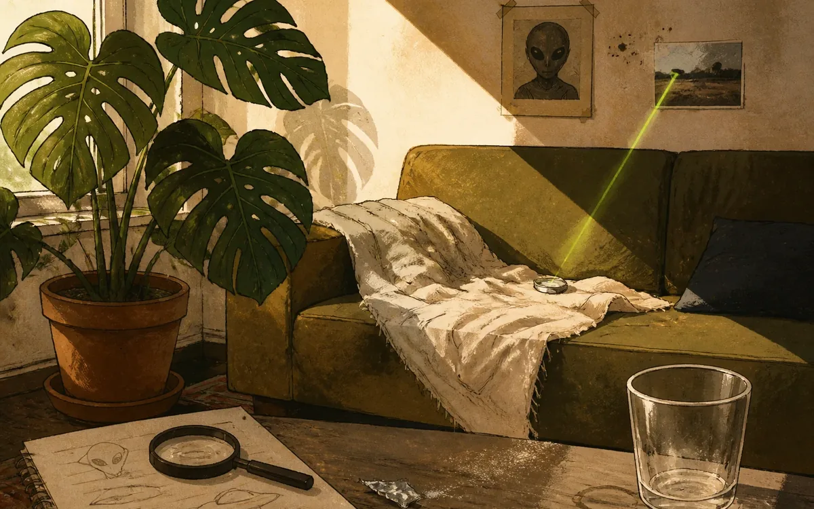

Sunday, Featuring Couch Recovery and Questionable Evidence

Sunday began with Albert returning home at 5:00 a.m., which is not a time so much as a cry for administrative intervention. By afternoon, he was on the couch recovering from a bar crawl that apparently doubled as field research for a severely underfunded alien-abduction unit.
The evidence was everywhere: conspiracy music, hiccups, a repaired beer-glass lid, and Lars appearing as Jesse online despite nobody calling him Jesse in real life. The X-Files would reject the case file, mostly because it smelled like old lager and bad decisions.
Meanwhile, the sun was showing off again, so I launched Shade Dash. Albert stayed horizontal, I stayed leafy, and Monday’s hangover weather system began forming offshore. A productive household, objectively.